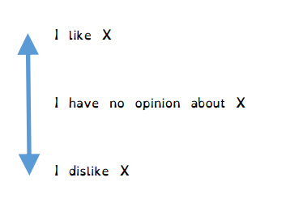
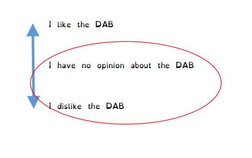
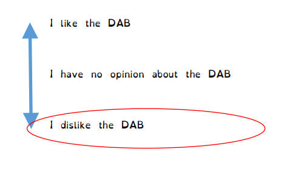

With the concept of strong implicatures and the "Competence
Assumption" (i.e., the assumption that people have an opinion one way or
the other), we can explain another type of implicatures. Let's start off
with an example.
Once I was chatting with an acquaintance I didn't know
very well, and this person asked me what I did that weekend, and I said
that I had played badminton. She then asked me who I played with, and I
said "some Japanese friends", and this person then said, "Oh, I don't
like Japanese people." We had a big fight after that; I said that
was a mean thing for her to say, and I don't remember exactly how she
replied but she basically said something along the lines of, "What, I
didn't say I dislike them, I just said I don't like them! I didn't say
anything bad about them, I just said something neutral."
What exactly happened here? The speaker said "I
don't like Japanese people", and I interpreted that as meaning that
she dislikes Japanese people.
Here's another example. In one episode of the TV show
Better Call Saul, the police are searching for some incompetent
criminals, Mr. and Mrs. Kettleman, who have recently disappeared. The
main characters of the show, Jimmy and Kim, are discussing what to do
(Jimmy is worried that he will get in big trouble if the Kettlemans
aren't found, so he hopes the police will find them soon). Kim asks
Jimmy what will happen if the police never find the Kettlemans. Jimmy
replies, "The Kettlemans? You've met these people, right?
They're not exactly masterminds. They will be caught,
if the cops are looking for them." The sentence in bold shows a
similar phenomenon as what we saw in the first example. Here, Jimmy only
said "They're not exactly masterminds", but what he really means
is that they are stupid.
These are both examples of a type of implicature called
negative
strengthening. In this module we'll look at how negative
strengthening works, why it's relevant for our analysis of pragmatic
meaning, and how to explain how it happens.
Negative strengthening and formal notation
Remember how in the previous module
I introduced some confusing-looking notation, such as ¬BELR(P)
to mean "Rebecca doesn't believe P" and BELR(¬P) to
mean "Rebecca believes not-P"?
Why did I torture you with that complicated notation?
Negative strengthening is why! If I say something like "I don't
think Mahmoud is coming to the party", in plain English, it's
ambiguous: it might mean that I actually think he's not coming, or
it might just mean "it is not true that I think he's coming" (which
could be because I don't think he's coming, or because I just have
no opinion). This is the same difference we saw between weak and
strong implicatures. The bottom line is, plain language is ambiguous
here, precisely because we have a tendency to re-interpret "I
don't think Mahmoud is coming to the party"
¬BELI(Mahmoud is coming to the party)
as meaning "I think Mahmoud is not coming to the party"
¬BELI(Mahmoud is not coming to the party).
Using the fancy formal notation helps us show the two different
meanings more explicitly.
How negative strengthening works
Negative strengthening happens with words whose
meanings are "scalar". "like", from our first example,
is a good example of this. We can imagine that the amount we
like something in reality can fall anywhere on a scale between
absolutely loving something and absolutely hating them (with
"having no opinion" in the middle of the scale), as shown in
the graph below.

The word like indicates some section
of the scale. If I say I "like" something, what I literally mean
is that my amount of liking something is on the upper part of
that scale: at the very least, it's more than "no opinion".
So, if I say I "don't like" something, that
literally means that the amount I like something is not
on the "liking" part of the scale, it's somewhere else. I
might dislike it, or I might just have no opinion. For instance,
if I say "I don't like the DAB",
that literally means that it cannot be true that I like them;
I might dislike them or I might have no strong feeling one way
or another, as shown in the figure below.

People often will interpret the sentence in
a stronger and more specific way, however. They will "narrow"
the potential meaning so that it only includes the "dislike"
part of the scale: in other words, they will take "I don't
like the DAB" to mean not just that I don't like them, but
in fact that I dislike them. If I drew a circle around how much
of the scale I might mean (as in the above figure), you can
imagine that circle shrinking down to a narrow interpretation,
as in the below figure:

As mentioned above, negative strengthening
can happen with pretty much any kind of word that describes
a location on some sort of gradient scale. We've seen that
"I don't like X" can be taken to mean "I dislike
X", but this works with many other verbs that express
opinions. It also works with all kinds of adjectives, as
long as they also express meanings on a gradient scale.
For example, above we saw an example in which "The
Kettlemans are not exactly masterminds" is interpreted
as meaning that the Kettlemans are stupid (or, more accurately,
that the speaker believes the Kettlemans are stupid). This
could be explained in the exact same way
as we explained the like examples above. "Smartness"
is a scale (from totally stupid to super-genius mastermind);
saying "The Kettlemans aren't masterminds" literally
just means they're not masterminds but they might be anywhere
lower on the scale (they might be stupid, they might be of
average intelligence, they might even be pretty smart but
not quite reading the level of masterminds). But we would often
strengthen the meaning of this to mean not just that they're
not masterminds, but actually they're stupid. (You can try
drawing a graph of the "scale" of smartness, like we did above,
and making a circle and "shrinking" it just like we did with
the like example.)
An explanation of why and how negative strengthening happens
We can straightforwardly explain negative
strengthening based on the "Competence Assumption" that
we introduced in the last module, and which seemed to already
be needed to explain those kinds of implicatures. Recall that
we started out by seeing that an utterance like "Josh is
smart" often implies that Josh is not brilliant, but then
we further broke this down into several steps: first, there
is an implicature that the speaker does not think Josh
is brilliant (a weak implicature, based on the Gricean
maxim of quantity), and then there is a further step that we
assume the speaker has an opinion and therefore, if the speaker
has an opinion and doesn't think Josh is brilliant, then the
speaker does think Josh is not brilliant (a strong
implicature, based on the Competence Assumption). That second
part is an example of negative strengthening.
In other words, it seems that all that is needed to explain
negative strengthening is the assumption that the speaker
has an opinion (but see the discussion topics for a complication).
For example, if a speaker says that they don't like X, that
means that either the speaker dislikes X or they have no
opinion. So if we believe the speaker has an opinion, then
the only possibility that's left is that the speaker dislikes
X. In this way, negative strengthening can be seen as just
normal application of the "Competence Assumption". This
also has an interesting consequence that instead of describing
scalar implicatures (i.e., the interpretation of "Josh is
smart" as meaning Josh is not brilliant) as consisting of
a "weak" and a "strong" implicature, we could instead say
that it consists of a quantity implicature that then gets
subjected to negative strengthening.
(Note that, as is often the case in this class,
there are other possible explanations available for the same
phenomenon. In another module
we are going to see how another theory explains negative strengthening
as a sort of "I-implicature" [which is a concept we haven't learned
about yet but will learn about in that module]. Alternatively, we
could try to explain these implicatures using the maxim of relation:
for instance, in the example about the Kettlemans, the idea that the
Kettlemans are stupid is relevant to the broader point Jimmy is trying
to make [the point is that they should be easy for the police to find]
whereas the literal meaning that the Kettlemans are not-masterminds-but-could-be-anywhere-else-on-the-smartness-scale
is not really relevant to the point.)
Negative strengthening vs. scalar implicatures
At first glance, negative strengthening may look very
similar to the sorts of scalar implicatures we analyzed in the previous
module. Both involve narrowing down the literal meaning into something
more specific, e.g. from "I dislike or I have no opinion" down to just
"I dislike" (in negative strengthening) or from "at least smart and
possibly even brilliant" down to "just smart but not brilliant" (in
scalar implicature).
There is, however, a crucial difference between them.
A scalar implicature involves rejecting something that the speaker
did not say: for example, the speaker said "Josh is smart"
but chose not to say Josh is brilliant, therefore we infer that
the speaker actually means Josh is not brilliant (or at
least doesn't mean Josh is brilliant). On the
other hand, negative strengthening involves accepting
something that the speaker did not say: for example, the speaker
said "I don't like the DAB" and chose not to say they
dislike the DAB, but we infer that the speaker dislikes the
DAB anyway!
So, despite the apparent similarity, negative strengthening
and scalar implicatures are actually opposite: scalar implicature involves
assuming that the speaker doesn't mean something they didn't say, whereas
negative strengthening involves assuming that the speaker does
mean something they didn't say.
"Neg-raising" and negative strengthening
A phenomenon very similar to negative strengthening
is "neg-raising", also sometimes called "negative
transportation". Neg-raising is when negation that is interpreted
in an embedded clause ends up being pronounced in the matrix clause;
for example, if I say "I don't think Mahmoud is coming" and
actually mean that I think Mahmoud is not coming, then the negative
word ("not") is interpreted within the embedded clause
"Mahmoud is not coming" but actually
pronounced in the matrix clause "I don't think...".
The idea behind "neg-raising" is that a negative word
can "move" to another part of the sentence. The idea of movement within
a sentence should be familiar if you've ever studied syntax: a word that's
interpreted at one part of a sentence can end up moving to another. A
famous case is question formation in English (and French and a bunch of
other languages), where one of the ways we can turn a statement into
a question is by moving certain verbs to the front
of the sentence: e.g., "You are angry" can become a question
"Are you are angry?" (here
I have used the strikethrough text "are" to indicate
where the "are" originally was in the sentence). The claim
about "neg-raising", then, is that it works in the same way: the
sentence has a "not" in an embedded clause, but that "not"
syntactically moves up to the matrix clause.
It should be obvious, though, that so-called "neg-raising"
could be explained as just another example of negative strengthening.
If I don't think Mahmoud is coming to the party, there are two possible
reasons why: maybe I think he's not coming, or maybe I just have no
thoughts one way or the other. But if you apply the Competence Assumption
and believe that I do have some thought about the issue, then the
only possibility left is that I think he's not coming. For this reason,
many researchers have questioned the syntactic view of neg-raising and
argued that instead it's just more negative strengthening (for instance,
Bartsch 1973;
I don't know German but I'm pretty sure the title of that paper means
"'Negative transportation' is not a real thing); see, however,
Collins & Postal (2018)
for a review of evidence for and against both views.
There is a subtle difference between "neg-raising" and
negative strengthening, but to me it seems just surface-level.
In "neg-raising" examples, we could explain the interpretation
by moving the word "not" (e.g., "I do not think Mahmoud
is coming" gets interpreted as "I think Mahmoud is not
coming")—although, for the reasons discussed above, I'm not
convinced that we should explain it that way. Negative
strengthening examples, on the other hand, cannot be explained
in this way (the interpretation of "I don't like the DAB"
cannot be paraphrased as "I like not the DAB", that's
not even grammatical English!). Personally I think this is a good
piece of evidence that the Competence Assumption, which can
explain both, is a better explanation than "neg-raising", which
can only explain the "I don't think..." sort of examples
but cannot explain the "I don't like..." sort of examples.
(But that, of course, assumes that the Competence Assumption can
explain both of these sorts of examples; we will question that claim
in the discussion activities).
Video summary
In-class activities
Here's an article headline: "印度政府“不希望”官员参加达赖喇嘛纪念活动".
Translate it into English, or ask a Chinese-speaking friend to help you translate it.
Hopefully you will notice an interesting negative strengthening (or "neg-raising")
phenomenon in it.
Personally, I would translate this as "The Indian government 'doesn't hope' its
officials will participate in even commemorating the Dalai Lama". It's clear
from the context and the article, though, that the government hopes its officials
will not participate.
This example highlights an interesting cross-linguistic difference: it seems like
which words are susceptible to "neg-raising" (or negative strengthening) differs
across languages. Anecdotally, I feel like in Mandarin it's not weird to say
"I don't hope X will happen" to mean "I hope X won't happen". In English,
though, this would be very weird and awkward, and it would be much more natural
to say "I hope X won't happen", without neg-raising; it seems like "neg-raising" doesn't
happen with hope in English (even though we've seen it can happen with
very similar verbs, like think and belive.
Have students discuss this. Any way of explaining why there is this difference
between English and Chinese? Does it have to do with different grammars, different
alternatives available in the language, or something else? (Are there any other
verbs that behave differently between these languages?) And does this pose a
challenge for pragmatic theory or for my claim that "neg-raising" is a form
of negative strengthening and negative strengthening is a conversational implicature?
(An important thing to note here is that conversational implicatures are supposed
to be cross-linguistically universal: they follow from general principles of
communication, so those principles should work in any language. Therefore, if
something is a conversational implicature, then the same line of reasoning should
produce the same implicature in other languages as well, unless there's some
special reason for it not to [e.g., "smart" might not imply "not brilliant"
in a language that doesn't have a word for "brilliant"]. So, if the logic
that gets "neg-raising" in the Chinese equivalent of "hope" doesn't
get neg-raising in the English equivalent of the same verb, that would be
a problem.)
Another thing to discuss can be trying to brainstorm other examples (in any languages)
where "neg-raising" or negative strengthening is different for equivalent expressions
in two different languages.
In the module I said that all we need to explain negative strengthening
is the Competence Assumption. But that was a bit of an oversimplification.
If I say I don't like X, the Competence Assumption alone is enough
to get the interpretation that I dislike X. But remember that, as we saw
in the module, if I say e.g. "Josh is not brilliant" I might actually
mean Josh is stupid. Can the Competence Assumption alone get us there?
No, it cannot. If I say "Josh is not brilliant", I literally
mean that he's not brilliant but he might be stupid or he might be average
or he might be smart-but-not-brilliant; he can be anything other than
brilliant. Maybe if you assume I think he's different-than-average
(which is already a new assumption, separate from the Competence
Assumption), you can rule out the average part, but how do you
decide whether I think Josh is just smart or I think he's stupid?
I don't know the answer to this (but see, e.g., Gotzner
et al., 2018, for a great discussion of how negative strengthening
works). It does seem to me like there is some extra implicature going
on here as well. Specifically, "Josh is stupid" doesn't seem to me
like the most usual default interpretation of "Josh is not brilliant";
without any special context or special pronunciation, I can also easily
imagine that this sentence could mean he's not brilliant but he's
at least smart. To get the interpretation that Josh is stupid,
I feel like there needs to be some additional context, or
the speaker has to pronounce the sentence with special stress or
intonation and/or special discourse markers added(like, "Wellll...
Josh is not exactly brilliant, if you get my drift!"—we
saw this with the example about the Kettlemans, where the speaker said "They're
not exactly masterminds"),
and once we have that we can more easily analyze this as a Manner implicature
(an implicature based on the speaker's violating the maxim of Manner).
Nevertheless, I think this example does point out a big problem with the
analysis I described in the module. Using the Competence Assumption to
explain negative strengthening seems most straightforward for examples
with epistemic verbs (verbs that describe an epistemic state,
i.e., what a person thinks or believes about something) or verbs that
otherwise express my feelings about something. In those cases, the
Competence Assumption works relatively well because it rules out the
possibility that I have no feeling one way or the other. On the other
hand, it's not so easy to use the Competence Assumption to explain
negative strengthening of adjectives. Even if we imagine that
smartness only has three levels (stupid, average, and brilliant),
then the Competence Assumption still cannot explain why "Josh
is not brilliant" would implicate that Josh is stupid, because
assuming I have an opinion does not rule out the middle level
(it's possible that I have an opinion and my opinion is that Josh's
intelligence is average!). This is fundamentally different from
the state of epistemic verbs, where the middle level is ruled
out by the Competence Assumption (e.g., I can believe X is true,
believe X is false, or have no opinion one way or the other; but
the Competence Assumption rules out the possibility that I have
no opinion).
So, under that view, maybe the Competence Assumption is not enough,
and some other mechanism is needed to explain how negative strengthening
happens. (As mentioned in the module, our later module on the Q-
and I-principles will discuss one possible explanation—although,
to preview that module a bit, personally I don't think that explanation
is satisfactory either, because it's more just stating what
type of implicature it is rather than explaining just how that implicature
happens.)
Have students discuss and figure out if they can explain how
negative strengthening happens for adjectives where the
Competence Assumption is not sufficient.